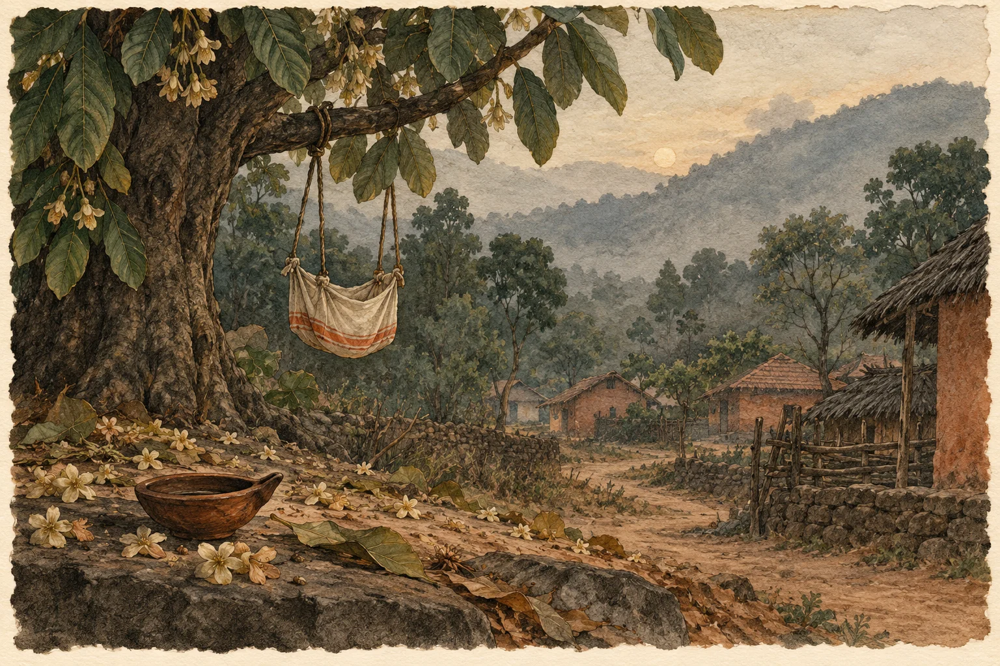

Original poem · ଓଡ଼ିଆ
ମଙ୍ଗଲି ଓ ୭୫ ଦିନର ଦଶହରା

**
ହସଦେଓର ଶାଖା ନଈଟି
ଶିଳାଦେହୀ ଠାରେ ମହାନଦୀରେ ମିଶିଚି
ପାହାଡ଼ ପ୍ରାନ୍ତରେ ଆଦିବାସୀ ଗୀତ ଫୁଟାଇ ବହିଚି
ଓଡ଼ିଶାର ମାଟି ଯାଏଁ,
ବଣୁଆ କୁସୁମ କୋଳି ଗଛରେ
ନାଲି ସିନ୍ଦୁରିଆ ପତର ମଡ଼ୁଆ ମାରିଲେ
ଜାଣିନିଅ ଦେବୀର ଆଇବା ବେଳ,
ରଜାଘର ଆୟୁଧ ପୂଜା
ସିନ୍ଦୂରଲଗା କେତେ ଅସ୍ତ୍ରଶସ୍ତ୍ର
ସିଙ୍ଗି ବଜାଗଜା, ଧୁମ୍ ଧାମ୍ ତିହାର୍
ଦୁଲୁକି ଯାଏ ଦଣ୍ଡକାରଣ୍ୟର ଛାତି
ଆକାଶ, ମାଟି, ପାଣି, ପବନ, ଜଙ୍ଗଲ
ସେ କଥା ଅନ୍ୟ ଯେ,
କୋଇଲା ଖଣିରେ ଧସେଇ ଗଲାରୁ ଶହ ଶହ ଏକର
ଗାଆଁ ଦୁଆରୁ ଉଠେଇ ନେଲେ ଗ୍ରାମଦେବୀକୁ ରାତାରାତି
ପଡ଼ିଆ ହେଲା ପତରା ଝାର
ବୁଡ଼ି ଗଲା ଭିଟା, ଉହୁଲି ଗଲା କୁଠ
ଭାସିଗଲା ଶାଲ, ମହୁଲ, ମୁଣ୍ଡର ଲକଡ଼ି(କାଠ) ବୁଝା,
ଉଭାନ୍ ହେଲା ବାଉଁଶ ହରିଆଲି,
ବିଡ଼ା ବିଡ଼ା କେନ୍ଦୁ ପତର
କିଏ ହେଜେ
ଶୋଇ ପଡ଼ିଛି କେତେ ମେକା କି ସାଦ ଧାନଫସଲ ଏ ସନ
ତହିଁରେ ଆଣ୍ଠୁ ଉଚ୍ଚ ବାଲିଚର,
ବନ୍ଦ୍ ହୁଏନି ଦେବୀର ଯାତରା,
ଏ ଯାତରା ଦିନ କେଇଟା ତ
ଯୋଗାଇ ଦିଏ ଦାନା ପେଟକୁ !
ମାଉଲି(ଦେବୀ) ମା ବାହାରେ,
ରଥ ଗଡ଼େଇ ଦନ୍ତେଶ୍ୱରୀ ପୀଠ ଗମ୍ ଗମ୍
ମାଦଲ ସଙ୍ଗେ ନାଚ୍ ହୁଏ,
ଏଠି ଅଢେ଼ଇ ମାସ ଧରି ଦଶହରା ମେଳା
ମା କଣ ଅଖିଆ ରଖିବ ଛୁଆଙ୍କୁ?
ଏ ଗଲା ସନ କଥା (ସତ୍ୟ ଘଟଣା ଆଧାରିତ)
ଛ ମାସର କୁନି ଝିଅ ମଙ୍ଗଲି
ଖିର ଖାଉଥିଲା ମାଁ କୋଳରେ,
ଶିଶୁଟିଏ ପାଇଁ ବ୍ରହ୍ମାଣ୍ଡର ସବୁଠୁ ନିରାପଦ ଥାନ
ମାଆର କୋଳ
ତାକୁ କଣ ଜଣା ଥିଲା;
କ୍ରସ୍ ଫାଇରିଁ ଗୁଳି ଭେଦିପାରେ ମାଆର କୋଳ!
ଖୁଚୁରା ପଇସା କେଇଟା,
ଟିପ କରି ସଜାଇ ଦେଇଛନ୍ତି ପରିବାର ଲୋକେ
ତାର ଶେଷ ବିଦାୟୀ ପୂର୍ବରୁ
କିଛି କୁତୁରା କନା ମଝି ମଙ୍ଗଲିର ଦେହ
ସଦ୍ୟଜାତ, ଶିଳାଦେହୀ ଦେବୀ ପରି ଦିଶୁଥାଏ
ଯଦିଓ ଅସୁରର ୟୁନିଫର୍ମ ରଙ୍ଗ କାହାକୁ ଜଣା ନାଇଁ
ଗାଁ ମାଇପ ମହୁଲ ବେଟେ,
ଯେଉଁ ଖରାରେ ପେଟରୁ ମୁତ ଶୁଖିଯାଏ
ସେ କେନ୍ଦୁପତ୍ର ତୋଳେ, ଧାଡ଼ିକରି ଶୁଖାଏ
ସାହୁକାର ନିଏ,
ସେ ସୁରମ୍ (ଏକ ପ୍ରକାର ମହୁଲି) ବିକେ,
ହାଟେ, ଦାଁଡେ (ଦାଣ୍ଡରେ)
ଅସମ୍ଭାଳ ଦଶହରା ଭିଡ଼ ନକ୍-ଟା ମୁଣ୍ଡା ବଜାରରେ।
ଗଞ୍ଜା(କୁକୁଡ଼ା) ଲଢେ଼ଇରେ ମାତାଲ୍
ମରଦ ଯେତେ ନାଳି ଆଖିଆ ହେଇ ହାଜର
ବେଶ୍ ଜମେ ବେପାର
କିଛି ଗାଆଁ ଇମିତି ଅଦୃଶ୍ୟ ଯେ
ଖୁଦ ନାଇଁ, ଜାଳେଣି ନାଇଁ, ସ୍କୁଲ୍ ନାଇଁ,
କି ମନ୍ଦିର ମସଜିଦ ଈଶ୍ୱରଙ୍କ ଏସବୁ ପାଲା ନାଇଁ
ମାଡ଼ିଆ ଜନଜାତିର ଏ ଗାଆଁ ଡେରା ଯାଏଁ
ଦେବୀର ପରଭା ବି ଏ ଗାଁମାଟି ମାଡ଼ି ନାଇଁ,
କାଦ ସରସର ମରଣ ବୋହି ପାରୁଥିବା
ରାସ୍ତାଟିଏ ପହଞ୍ଚି ଯାଇଛି ଯେତେବେଳେ
ଗୁଳି ଲେଖା ଅଛି କପାଳରେ,
ବଳି ମାଗେ ଏ ଗାଁ ଖୁଲି (ଅଗଣା)
ସେ ଯାହାବି ହେଇଥାଉ
ଦଶ ଦିନରେ ସରେନି
ଫି ବରଷ ୭୫ ଦିନର ଦଶହରା ଏଠି !
*
_ ଶକୁନ୍ତଳା
Read at source ↗
Poems appear in their original language. The language selector changes the website text.